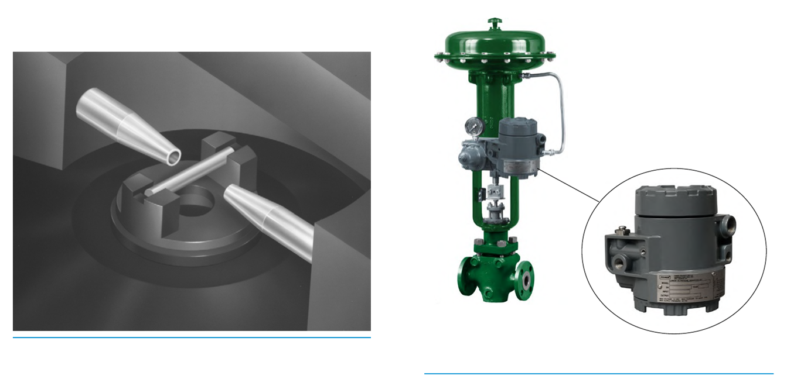

How an I/P Transducer Works

- 1The input current signal positions the deflector bar between the two nozzles, changing pilot pressure
- 2Pilot pressure drives the booster stage and sets the pneumatic output directly — with no position feedback at all
- 3The assembled transducer, mounted on the valve in place of a positioner
After Control Valve Handbook, 6th ed., Figs. 4.5, 4.6 — used directly, combined side by side. Component Index: cvh-cmp-4.5, cvh-cmp-4.6.